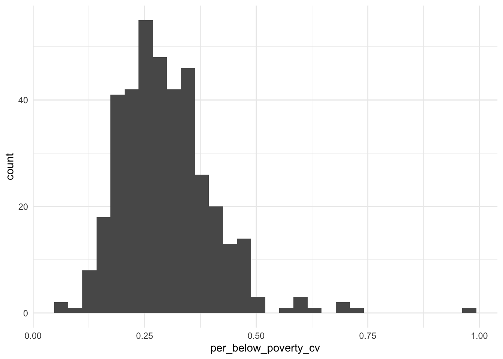
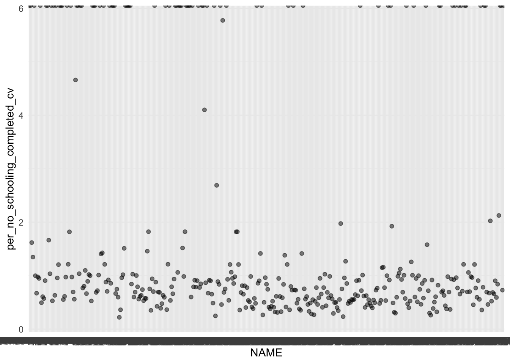
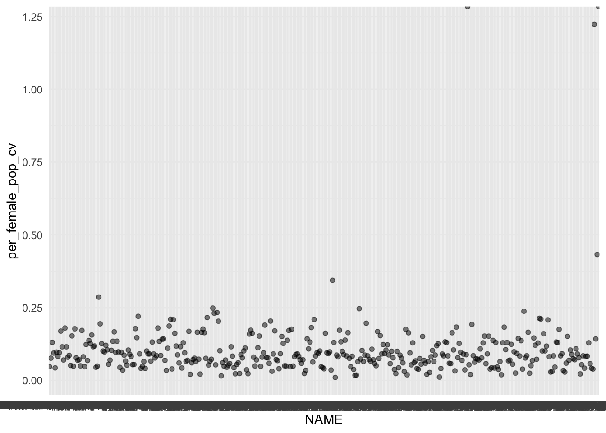
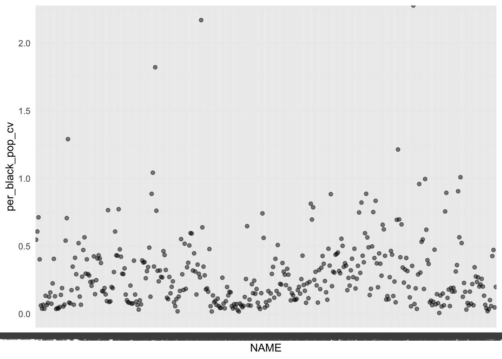
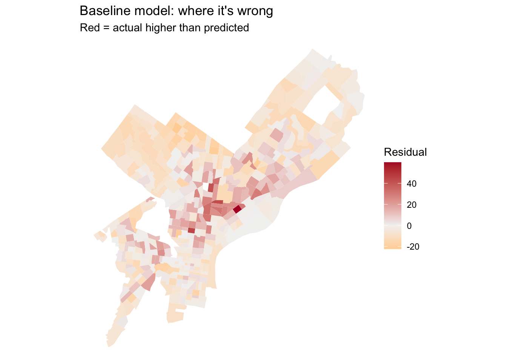
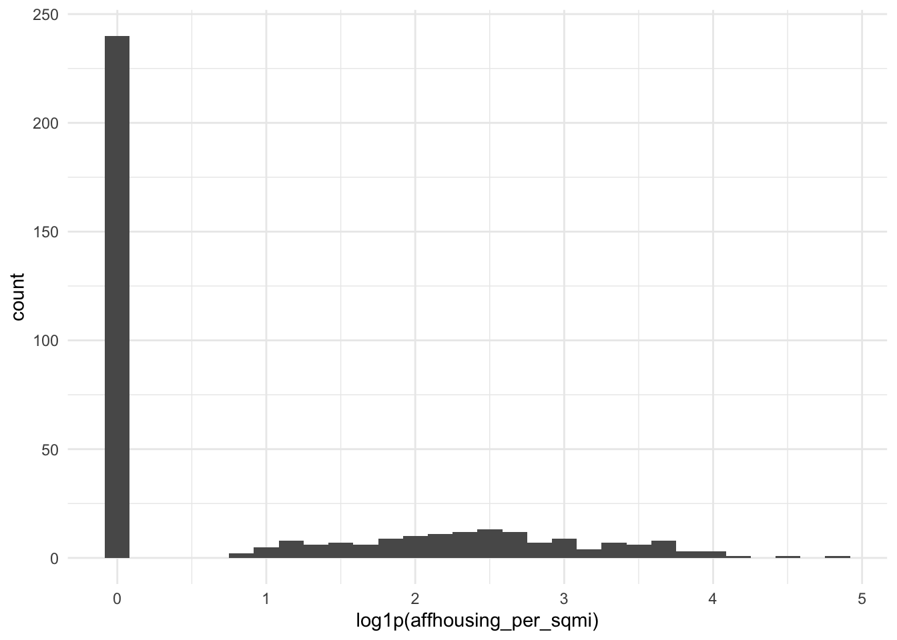
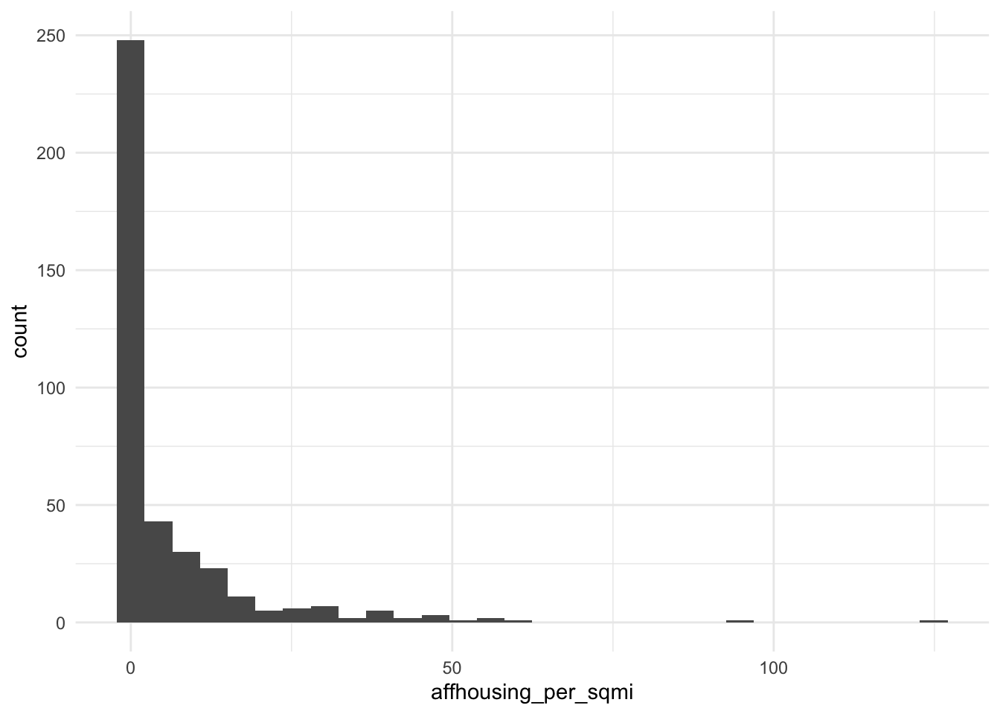
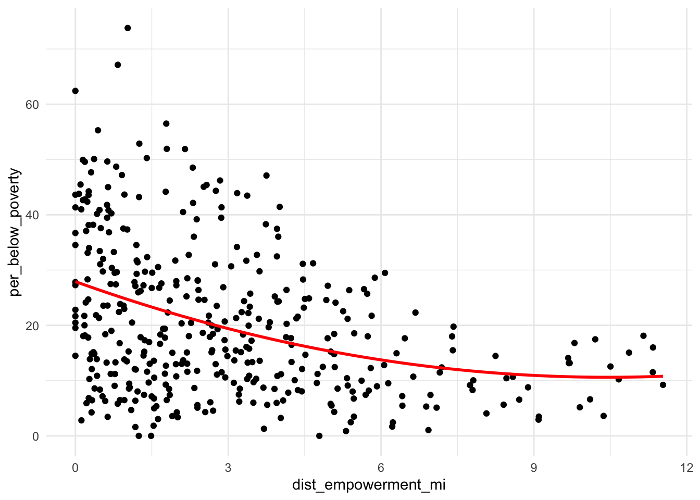
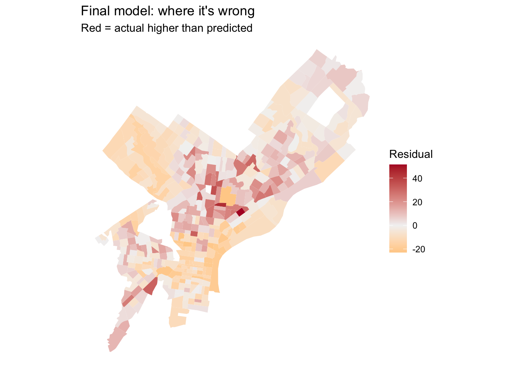
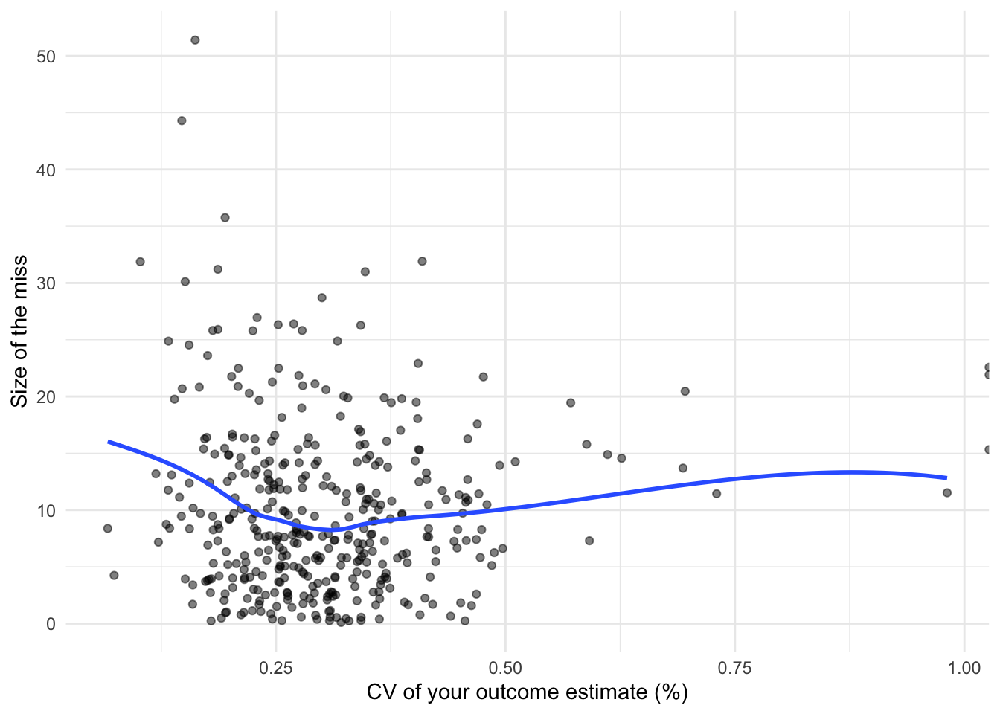

Code
library(tidyverse)
library(tidycensus)
library(sf)
library(caret)
Sys.getenv("CENSUS_API_KEY") != "" # should print TRUE[1] TRUEMUSA 5080 · Integrates Weeks 1–5 · Due Friday, October 16
library(tidyverse)
library(tidycensus)
library(sf)
library(caret)
Sys.getenv("CENSUS_API_KEY") != "" # should print TRUE[1] TRUEctrl <- trainControl(method = "cv", number = 10)
cv_rmse <- function(formula, data) {
df <- if (inherits(data, "sf")) st_drop_geometry(data) else data
vars <- all.vars(formula)
bad <- vars[sapply(vars, function(v) any(is.na(df[[v]])))]
if (length(bad) > 0) {
stop("These variables have NAs: ", paste(bad, collapse = ", "),
". Fill them or choose another variable (Rule 1: don't drop rows).")
}
set.seed(5080)
fit <- train(formula, data = df, method = "lm", trControl = ctrl)
fit$results$RMSE
}model_log <- tibble(
model = character(),
added = character(),
cv_rmse = numeric(),
notes = character()
)philly_tracts <- get_acs(
geography = "tract",
state = "PA",
county = "Philadelphia",
variables = c(
total_pop = "B01003_001",
# your outcome's numerator and denominator (or median), e.g.:
pop_below_poverty = "B17001_002",
# your baseline predictors, e.g.:
no_schooling_completed = "B15003_002",
female_pop = "B01001_026",
black_pop = "B02001_003E"
),
year = 2023,
output = "wide",
geometry = TRUE
) %>%
st_transform(2272)
|
| | 0%
|
| | 1%
|
|= | 1%
|
|= | 2%
|
|== | 3%
|
|== | 4%
|
|=== | 4%
|
|=== | 5%
|
|==== | 5%
|
|===== | 6%
|
|===== | 7%
|
|====== | 8%
|
|====== | 9%
|
|======= | 9%
|
|======= | 10%
|
|======== | 12%
|
|========= | 13%
|
|========== | 14%
|
|========== | 15%
|
|=========== | 16%
|
|============ | 17%
|
|============ | 18%
|
|============= | 19%
|
|============== | 20%
|
|=============== | 21%
|
|=============== | 22%
|
|================ | 23%
|
|================= | 24%
|
|================= | 25%
|
|================== | 26%
|
|=================== | 27%
|
|=================== | 28%
|
|==================== | 29%
|
|===================== | 30%
|
|===================== | 31%
|
|====================== | 32%
|
|======================= | 33%
|
|======================= | 34%
|
|======================== | 35%
|
|========================= | 36%
|
|========================== | 37%
|
|=========================== | 38%
|
|============================ | 39%
|
|============================ | 40%
|
|============================= | 41%
|
|============================== | 42%
|
|============================== | 43%
|
|=============================== | 44%
|
|================================ | 45%
|
|================================ | 46%
|
|================================= | 47%
|
|================================== | 48%
|
|================================== | 49%
|
|=================================== | 50%
|
|==================================== | 51%
|
|===================================== | 52%
|
|====================================== | 54%
|
|====================================== | 55%
|
|======================================= | 56%
|
|======================================== | 57%
|
|========================================= | 58%
|
|========================================= | 59%
|
|========================================== | 60%
|
|=========================================== | 61%
|
|=========================================== | 62%
|
|============================================ | 63%
|
|============================================= | 64%
|
|============================================= | 65%
|
|============================================== | 66%
|
|=============================================== | 67%
|
|=============================================== | 68%
|
|================================================ | 69%
|
|================================================= | 70%
|
|================================================= | 71%
|
|================================================== | 72%
|
|=================================================== | 73%
|
|=================================================== | 74%
|
|==================================================== | 75%
|
|===================================================== | 76%
|
|====================================================== | 76%
|
|====================================================== | 77%
|
|======================================================= | 78%
|
|======================================================== | 79%
|
|======================================================== | 80%
|
|========================================================= | 81%
|
|========================================================== | 82%
|
|========================================================== | 83%
|
|=========================================================== | 84%
|
|============================================================ | 85%
|
|============================================================ | 86%
|
|============================================================= | 87%
|
|============================================================== | 88%
|
|============================================================== | 89%
|
|=============================================================== | 90%
|
|================================================================ | 91%
|
|================================================================= | 92%
|
|================================================================= | 93%
|
|================================================================== | 94%
|
|=================================================================== | 95%
|
|=================================================================== | 96%
|
|==================================================================== | 97%
|
|===================================================================== | 98%
|
|===================================================================== | 99%
|
|======================================================================| 100%philly_tracts <- philly_tracts %>%
mutate(
# Poverty
per_below_poverty = pop_below_povertyE / total_popE * 100,
per_below_poverty_moe = moe_prop(pop_below_povertyE, total_popE, pop_below_povertyM, total_popM),
per_below_poverty_cv = (per_below_poverty_moe / 1.645) / per_below_poverty * 100,
# Educational attainment
per_no_schooling_completed = no_schooling_completedE / total_popE * 100,
per_no_schooling_completed_moe = moe_prop(no_schooling_completedE, total_popE, no_schooling_completedM, total_popM),
per_no_schooling_completed_cv = (per_no_schooling_completed_moe / 1.645) / per_no_schooling_completed * 100,
# Female population
per_female_pop = female_popE / total_popE * 100,
per_female_pop_moe = moe_prop(female_popE, total_popE, female_popM, total_popM),
per_female_pop_cv = (per_female_pop_moe / 1.645) / per_female_pop * 100,
# Black population
per_black_pop = black_pop / total_popE * 100,
per_black_pop_moe = moe_prop(black_pop, total_popE, B02001_003M, total_popM),
per_black_pop_cv = (per_black_pop_moe / 1.645) / per_black_pop * 100
)# How many tracts have no value for your outcome?
sum(is.na(philly_tracts$per_below_poverty_cv))[1] 17# How reliable is it?
summary(philly_tracts$per_below_poverty_cv) Min. 1st Qu. Median Mean 3rd Qu. Max. NA's
0.06663 0.22760 0.28477 Inf 0.35557 Inf 17 philly_tracts %>%
mutate(reliability = case_when(
per_below_poverty_cv < 12 ~ "High",
per_below_poverty_cv <= 40 ~ "Moderate",
TRUE ~ "Low"
)) %>%
st_drop_geometry() %>%
count(reliability) reliability n
1 High 388
2 Low 20# What does the distribution look like?
ggplot(philly_tracts, aes(x = per_below_poverty_cv)) +
geom_histogram(bins = 30) +
theme_minimal()
What is your outcome, why would an agency want to predict it, and how reliable is it?
My outcome variable is percent of the total population below poverty by census tract in Philadelphia County. An agency would want to predict this in order to know which areas are in need of services relates to poverty alleviation (jobs, more funding for schools). The reliability of the outcome is high, in that only 4.9% (20) of the census tracts have CVs with a low reliability, while 95% (388) have CVs with high reliability.
tracts <- philly_tracts %>%
filter(total_popE > 0,
!is.na(per_below_poverty_cv),
!is.na(per_no_schooling_completed_cv),
!is.na(per_female_pop_cv),
!is.na(per_black_pop_cv))
nrow(philly_tracts)[1] 408nrow(tracts)[1] 391How many tracts did you lose, and what kinds of places are they?
We lost 17 census tracts. Cross-checking with a map, these are places that are mainly zoned industrial with little to no population.
# one scatterplot per predictor, e.g.:
ggplot(tracts, aes(x = NAME, y = per_no_schooling_completed_cv)) + geom_point(alpha = 0.5) +
geom_smooth(method = "lm", se = FALSE) + theme_minimal()
ggplot(tracts, aes(x = NAME, y = per_female_pop_cv)) + geom_point(alpha = 0.5) +
geom_smooth(method = "lm", se = FALSE) + theme_minimal()
ggplot(tracts, aes(x = NAME, y = per_black_pop_cv)) + geom_point(alpha = 0.5) +
geom_smooth(method = "lm", se = FALSE) + theme_minimal()
f1 <- per_below_poverty ~ per_no_schooling_completed + per_female_pop + per_black_pop
m1 <- lm(f1, data = tracts)
summary(m1)
Call:
lm(formula = f1, data = tracts)
Residuals:
Min 1Q Median 3Q Max
-22.450 -7.942 -2.656 5.397 59.939
Coefficients:
Estimate Std. Error t value Pr(>|t|)
(Intercept) 0.50607 4.57921 0.111 0.9121
per_no_schooling_completed 1.99733 0.34915 5.721 2.13e-08 ***
per_female_pop 0.20021 0.08670 2.309 0.0215 *
per_black_pop 0.16919 0.01845 9.170 < 2e-16 ***
---
Signif. codes: 0 '***' 0.001 '**' 0.01 '*' 0.05 '.' 0.1 ' ' 1
Residual standard error: 11.88 on 387 degrees of freedom
Multiple R-squared: 0.2331, Adjusted R-squared: 0.2271
F-statistic: 39.21 on 3 and 387 DF, p-value: < 2.2e-16model_log <- model_log %>%
add_row(model = "m1", added = "ACS baseline",
cv_rmse = cv_rmse(f1, tracts),
notes = "model")
model_log# A tibble: 1 × 4
model added cv_rmse notes
<chr> <chr> <dbl> <chr>
1 m1 ACS baseline 11.8 modelWrite the CV RMSE as a sentence, in your outcome’s units: On tracts it hasn’t seen, the baseline model misses by about 11.85 percentage points.
tracts <- tracts %>% mutate(resid_m1 = residuals(m1))
ggplot(tracts) +
geom_sf(aes(fill = resid_m1), color = NA) +
scale_fill_gradient2(low = "orange", mid = "grey95", high = "#b2182b", midpoint = 0) +
theme_void() +
labs(title = "Baseline model: where it's wrong",
subtitle = "Red = actual higher than predicted",
fill = "Residual")
Where do the residuals cluster? What might those places have in common that your model doesn’t know about?
The residuals are clustering in North Philadelphia, Brewery Town, and Strawberry Mansion. This means that these are census tracts where percent of the population below poverty is higher than the model (the three predictors of no schooling, female population, and black population) predicts. This means that there may be other reasons people are living below poverty that might more accurately explain the difference, such as neighborhood disinvestment or access to employment.
carto_get <- function(sql) {
url <- paste0("https://phl.carto.com/api/v2/sql?format=GeoJSON&q=", URLencode(sql))
st_read(url, quiet = TRUE)
} #Layer 1: Affordable Housing Production
affordable_housing <- st_read("https://hub.arcgis.com/api/v3/datasets/ca8944190b604b2aae7eff17c8dd9ef5_0/downloads/data?format=geojson&spatialRefId=4326&where=1%3D1")Reading layer `Affordable_Housing' from data source
`https://hub.arcgis.com/api/v3/datasets/ca8944190b604b2aae7eff17c8dd9ef5_0/downloads/data?format=geojson&spatialRefId=4326&where=1%3D1'
using driver `GeoJSON'
replacing null geometries with empty geometries
Simple feature collection with 501 features and 12 fields (with 22 geometries empty)
Geometry type: POINT
Dimension: XY
Bounding box: xmin: -75.2489 ymin: 39.90037 xmax: -74.98216 ymax: 40.12169
Geodetic CRS: WGS 84affordable_housing <- affordable_housing %>%
filter(fiscal_year_complete >= 1995,
fiscal_year_complete <= 2023)
affordable_housing2 <- affordable_housing %>%
select(project_type,
fiscal_year_complete,
geometry)
affordable_housing2 <- st_transform(
affordable_housing2,
st_crs(tracts)
)
#Layer 2: Empowerment Zones
empowerment_zones <- st_read("https://hub.arcgis.com/api/v3/datasets/78fa563815654742909159b53fa4b065_0/downloads/data?format=geojson&spatialRefId=4326&where=1%3D1")Reading layer `eadcbd25-3551-45ab-8f7f-c70bf69af92c202041-1-5n321a.k82mn' from data source `https://hub.arcgis.com/api/v3/datasets/78fa563815654742909159b53fa4b065_0/downloads/data?format=geojson&spatialRefId=4326&where=1%3D1'
using driver `GeoJSON'
Simple feature collection with 3 features and 6 fields
Geometry type: POLYGON
Dimension: XY
Bounding box: xmin: -75.23017 ymin: 39.95865 xmax: -75.12549 ymax: 39.99367
Geodetic CRS: WGS 84empowerment_zones2 <- empowerment_zones %>%
select(ZONE_NAME, geometry)
empowerment_zones2 <- st_transform(
empowerment_zones2,
st_crs(tracts)
)Why these layers? What do you expect them to capture that the ACS variables don’t?
I chose Affordable Housing production to include the role that housing cost plays in living below the poverty level. I included the city’s Empowerment Zones because they have specific federal granted amenities (tax incentives, loans, etc) meant to attract and support businesses, or create employment for people. Both of these varibles aim to address larger issues related to lack of access to jobs and cost of living that both relate to poverty production.
Build at least three spatial features from your own layers, and use at least two types (count, density, nearest distance, distance to a place). After each one, fit a model, cross-validate it, and log it.
#1 and 2: How many Affordable Housing buildings are there per square mile and per 1000 people?
tracts <- tracts %>%
mutate(n_affordable_housing2 = lengths(st_intersects(., affordable_housing2)))
summary(tracts$n_affordable_housing2) Min. 1st Qu. Median Mean 3rd Qu. Max.
0.000 0.000 0.000 1.046 1.000 14.000 tracts <- tracts %>%
mutate(
area_sqmi = as.numeric(st_area(.)) / 27878400,
affhousing_per_sqmi = n_affordable_housing2 / area_sqmi,
affhousing_per_1k = n_affordable_housing2 / total_popE * 1000
)
f2 <- per_below_poverty ~ affhousing_per_sqmi + affhousing_per_1k
model_log <- model_log %>%
add_row(
model = "m2",
added = "Affordable housing density and per-capita rate",
cv_rmse = cv_rmse(f2, tracts),
notes = "Tests whether affordable housing concentration is associated with tract-level poverty"
)
#3: How far is Affordable Housing from an Empowerment Zone?
tract_pts <- st_point_on_surface(tracts)
nearest_idx <- st_nearest_feature(tract_pts, empowerment_zones2)
tracts <- tracts %>%
mutate(dist_empowerment_mi = as.numeric(
st_distance(tract_pts, empowerment_zones2[nearest_idx, ], by_element = TRUE)) / 5280)
f3 <- per_below_poverty ~ dist_empowerment_mi
model_log <- model_log %>%
add_row(
model = "m3",
added = "Distance to nearest empowerment zone",
cv_rmse = cv_rmse(f3, tracts),
notes = "Tests whether proximity to empowerment zones is associated with tract-level poverty"
)
model_log# A tibble: 3 × 4
model added cv_rmse notes
<chr> <chr> <dbl> <chr>
1 m1 ACS baseline 11.8 model
2 m2 Affordable housing density and per-capita rate 13.4 Tests whether af…
3 m3 Distance to nearest empowerment zone 12.6 Tests whether pr…Answer: Which spatial feature helped most? Did any feature you expected to help do nothing, or make CV RMSE worse? Why might that be?
All of my spatial layers, Affordable housing density, Affordable housing per-capita rate, and Distance to nearest empowerment zone made the CV RMSE slightly worse. This could mean that these are not the most important predictors to why people live below the poverty line. That could be because affordable housing is often not actually that affordable, and the empowerment zones may actually not create as many jobs as they are expected to.
ggplot(tracts, aes(x = affhousing_per_sqmi)) + geom_histogram(bins = 30) + theme_minimal()
ggplot(tracts, aes(x = log1p(affhousing_per_sqmi))) + geom_histogram(bins = 30) + theme_minimal()
log(0) is -Inf, and it will break your model. Counts and densities often include zeros. Use log1p(x), which computes log(x + 1), for anything that can be 0.
Reading the coefficient: when a predictor is logged, a 1% increase in X goes with a change of about β/100 in Y, in Y’s units. With log1p, this reading is approximate for small values of X.
If your scatterplot bends (rising and then flattening, or falling and then rising), a squared term lets the line curve. Write it with I(), which tells R to do the arithmetic rather than read ^ as formula syntax.
Reading the coefficient: you can’t read either coefficient alone anymore. The effect of X depends on where you are along X. A positive linear term with a negative squared term means Y rises with X and then levels off or turns down. Plot the fitted curve to see it:
Try at least one of each: a log, a squared term, and a categorical variable. Choose which variables to transform based on your plots, not at random. Log each model.
# my log
ggplot(tracts, aes(x = affhousing_per_sqmi)) + geom_histogram(bins = 30) + theme_minimal()
ggplot(tracts, aes(x = log1p(affhousing_per_sqmi))) + geom_histogram(bins = 30) + theme_minimal()
f_log <- per_below_poverty ~ log1p(affhousing_per_sqmi)
model_log <- model_log %>%
add_row(model = "m3", added = "log of affhousing_per_sqmi",
cv_rmse = cv_rmse(f_log, tracts),
notes = "Log transformation reduces right skew in affordable housing density")
# my squared term
ggplot(tracts, aes(x = dist_empowerment_mi, y = per_below_poverty)) +
geom_point() +
geom_smooth(method = "lm", formula = y ~ x + I(x^2), se = FALSE, color = "red") +
theme_minimal()
f_squared <- per_below_poverty ~
dist_empowerment_mi +
I(dist_empowerment_mi^2)
model_log <- model_log %>%
add_row(model="m4", added = "Squared Distance to Empowerment Zone",
cv_rmse = cv_rmse(f_squared, tracts),
notes = "Tests whether the relationship between distance to empowerment zones and poverty rates is nonlinear")
# categorical
tracts <- tracts %>%
mutate(
ring = case_when(
dist_empowerment_mi < 2 ~ "Core",
dist_empowerment_mi < 5 ~ "Inner",
TRUE ~ "Outer"
),
ring = factor(ring, levels = c("Core", "Inner", "Outer"))
)
f_cat <- per_below_poverty ~ ring
tracts %>% st_drop_geometry() %>% count(ring) ring n
1 Core 177
2 Inner 137
3 Outer 77m_cat <- lm(per_below_poverty ~ ring, data = tracts)
summary(m_cat)
Call:
lm(formula = per_below_poverty ~ ring, data = tracts)
Residuals:
Min 1Q Median 3Q Max
-24.174 -9.406 -1.641 7.056 49.624
Coefficients:
Estimate Std. Error t value Pr(>|t|)
(Intercept) 24.1740 0.9583 25.225 < 2e-16 ***
ringInner -3.5576 1.4508 -2.452 0.0146 *
ringOuter -12.3059 1.7405 -7.070 7.24e-12 ***
---
Signif. codes: 0 '***' 0.001 '**' 0.01 '*' 0.05 '.' 0.1 ' ' 1
Residual standard error: 12.75 on 388 degrees of freedom
Multiple R-squared: 0.1142, Adjusted R-squared: 0.1096
F-statistic: 25 on 2 and 388 DF, p-value: 6.117e-11model_log <- model_log %>%
add_row(model="m5", added = "Categorical Distance Rings",
cv_rmse = cv_rmse (f_cat, tracts),
notes = "Tests whether poverty rates differ across Core, Inner, and Outer distance groups")
model_log# A tibble: 6 × 4
model added cv_rmse notes
<chr> <chr> <dbl> <chr>
1 m1 ACS baseline 11.8 model
2 m2 Affordable housing density and per-capita rate 13.4 Tests whether af…
3 m3 Distance to nearest empowerment zone 12.6 Tests whether pr…
4 m3 log of affhousing_per_sqmi 12.9 Log transformati…
5 m4 Squared Distance to Empowerment Zone 12.5 Tests whether th…
6 m5 Categorical Distance Rings 12.7 Tests whether po…Answer: Which transformation helped most? For your categorical variable, write one sentence reading one of its coefficients correctly, naming the reference level.
The transformation that helped me the most was the Squared Distance to Empowerment Zone (m4), which has a cv_rmse of 12.53. This means that it helps predict poverty rates best because it had the lowest cross-validation prediction error. For the categorical variable, the poverty rate in Inner census tracts is, on average, 3.56 percentage points lower than in Core census tracts, the reference category. The difference is statistically significant (p=0.0146).
Combine the features and transformations that earned their place, judged by CV RMSE, not p-values.
f_final <- per_below_poverty ~ log1p(affhousing_per_sqmi) + dist_empowerment_mi + I(dist_empowerment_mi^2)
m_final <- lm(f_final, data = tracts)
summary(m_final)
Call:
lm(formula = f_final, data = tracts)
Residuals:
Min 1Q Median 3Q Max
-22.909 -9.217 -1.752 7.525 51.398
Coefficients:
Estimate Std. Error t value Pr(>|t|)
(Intercept) 24.82891 1.68251 14.757 < 2e-16 ***
log1p(affhousing_per_sqmi) 1.55808 0.55216 2.822 0.00502 **
dist_empowerment_mi -2.46902 0.77086 -3.203 0.00147 **
I(dist_empowerment_mi^2) 0.10099 0.07662 1.318 0.18825
---
Signif. codes: 0 '***' 0.001 '**' 0.01 '*' 0.05 '.' 0.1 ' ' 1
Residual standard error: 12.46 on 387 degrees of freedom
Multiple R-squared: 0.1565, Adjusted R-squared: 0.15
F-statistic: 23.94 on 3 and 387 DF, p-value: 3.119e-14model_log <- model_log %>%
add_row(
model = "final",
added = "Log affordable housing density and squared distance",
cv_rmse = cv_rmse(f_final, tracts),
notes = "Combines a log transformation and a quadratic distance term to model potential nonlinear relationships with poverty"
)
model_log# A tibble: 7 × 4
model added cv_rmse notes
<chr> <chr> <dbl> <chr>
1 m1 ACS baseline 11.8 model
2 m2 Affordable housing density and per-capita rate 13.4 Tests wheth…
3 m3 Distance to nearest empowerment zone 12.6 Tests wheth…
4 m3 log of affhousing_per_sqmi 12.9 Log transfo…
5 m4 Squared Distance to Empowerment Zone 12.5 Tests wheth…
6 m5 Categorical Distance Rings 12.7 Tests wheth…
7 final Log affordable housing density and squared distance 12.4 Combines a …tracts <- tracts %>% mutate(resid_final = residuals(m_final))
ggplot(tracts) +
geom_sf(aes(fill = resid_final), color = NA) +
scale_fill_gradient2(low = "orange", mid = "grey95", high = "#b2182b", midpoint = 0) +
theme_void() +
labs(title = "Final model: where it's wrong",
subtitle = "Red = actual higher than predicted",
fill = "Residual")
Put your two residual maps side by side, or put them next to each other in the rendered document. Did the clusters from Part 2C shrink? Where did they stay?
The two maps look almost identical. This makes sense considering the residuals for the two maps were close, with the Baseline model at 11.85 and the Final at 12.44.
ggplot(tracts, aes(x = per_below_poverty_cv, y = abs(resid_final))) +
geom_point(alpha = 0.5) +
geom_smooth(se = FALSE) +
labs(x = "CV of your outcome estimate (%)", y = "Size of the miss") +
theme_minimal()
summary(m_final)
Call:
lm(formula = f_final, data = tracts)
Residuals:
Min 1Q Median 3Q Max
-22.909 -9.217 -1.752 7.525 51.398
Coefficients:
Estimate Std. Error t value Pr(>|t|)
(Intercept) 24.82891 1.68251 14.757 < 2e-16 ***
log1p(affhousing_per_sqmi) 1.55808 0.55216 2.822 0.00502 **
dist_empowerment_mi -2.46902 0.77086 -3.203 0.00147 **
I(dist_empowerment_mi^2) 0.10099 0.07662 1.318 0.18825
---
Signif. codes: 0 '***' 0.001 '**' 0.01 '*' 0.05 '.' 0.1 ' ' 1
Residual standard error: 12.46 on 387 degrees of freedom
Multiple R-squared: 0.1565, Adjusted R-squared: 0.15
F-statistic: 23.94 on 3 and 387 DF, p-value: 3.119e-14Answer in prose, drawing on your model log (incorporate our words of the day for bonus points. just kidding):
The ACS baseline model (m1) performed best, with a CV RMSE of 11.85, indicating the lowest prediction error. The log transformation of affordable housing density did not improve the model, with a CV RMSE of 12.91. This may be because affordable housing density does not have a strong enough relationship with poverty rates to improve predictions beyond the baseline variables. The affordable housing density and per-capita rate model (m2) performed worst, with a CV RMSE of 13.40, suggesting that these additional predictors did not provide enough useful information to improve the model’s accuracy.
Another feature that lowered the CV RMSE the most was the Squared Distance to Empowerment Zone model. This was interesting to me, considering that I tend to believe that a lot of this city-sponsored programs tend to have hollow promises of alleviating poverty and don’t often get to the source of the problem (decades of disinvestment, lack of jobs).
β̂ reading: Holding distance to the nearest empowerment zone and its squared term constant, a one-unit increase in log-transformed affordable housing density is associated with a 1.56 percentage-point increase in the predicted poverty rate.
ŷ reading: For a census tract with an affordable housing density of 10 buildings per square mile and a distance of 3 miles from the nearest empowerment zone, the model predicts a poverty rate of approximately 27.8%.
The predicted value is an illustrative example using those specific predictor values.
. 3. What’s still missing? Look at your final residual map. Name one thing about those places you’d want to measure next, and where you might get the data.
Considering that the baseline and final map did not shift visually in a huge way, I think I would want to considering employment rates next. I didn’t want to use this in the initial model because it felt a bit obvious, but I’m curious to see how much it shifts the baseline. I would get this data from the 5-year ACS for 2023.
The remaining prediction error may partly reflect statistical uncertainty in the poverty estimates, particularly in census tracts with higher coefficients of variation (CV). If the plot shows that larger prediction errors tend to occur in tracts with higher CVs, this suggests that some of the model’s error may be due to uncertainty in the underlying estimates rather than the model itself. However, other factors not included in the model may also contribute to the remaining error.